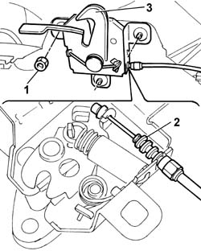

7025A34 BONNET LID LOCK (ONE) - R+R OR REPAIR
- Path
- Procedures > 70 FITTINGS > 7025 COMPARTMENT LIDS > 7025A LOCATION OF BONNET WIND NOISE > 7025A34 BONNET LID LOCK (ONE) - R+R OR REPAIR
- Kind
- repair procedure (removal / refitting; the operation number is the code)
- Applies to
- all engines; all production periods
- Interactive page
- https://sloeber94.github.io/elrnDB-fDct/en/#/244001482
Applies to: all engines; all production periods
 Removing
Removing
 Refitting
RefittingOp. 7055A42 FRONT GRILLE - R+R
1. Undo the nuts fixing the lock to the crossmember.
2. Disconnect the bonnet release cable from the lock.
3. Remove the bonnet lid catch.

Applies to: all engines; all production periods
Refitting
Removing- Connect the bonnet release cable to the lock.
- Fit the bonnet catch by screwing in the bolts without tightening.
- Adjust the position of the lock both longitudinally and vertically.
Op. 7055A42 FRONT GRILLE - R+R
- Check that the lock and the control system are working.